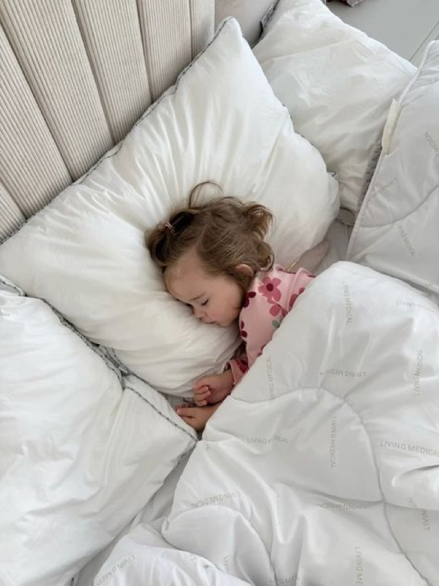
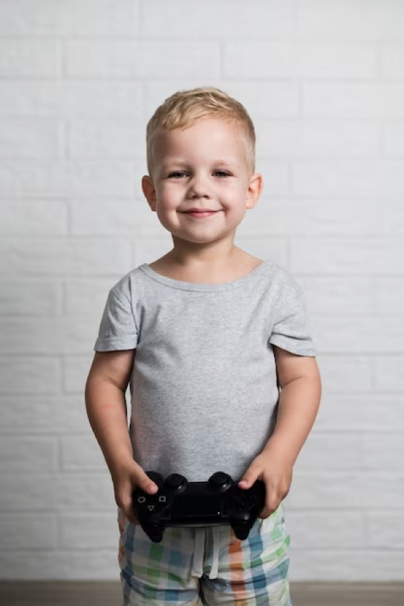
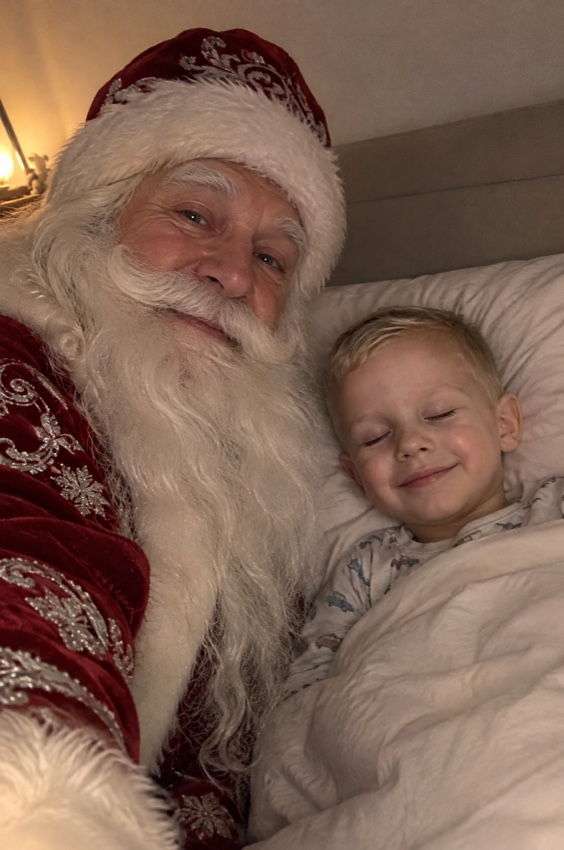

Фото спящего ребёнка
Добавим Деда Мороза прямо на исходный снимок. Так лучше всего сохраняются внешность ребёнка, его поза во сне и обстановка.


Какое фото хотите загрузить?
Добавим Деда Мороза прямо на исходный снимок. Так лучше всего сохраняются внешность ребёнка, его поза во сне и обстановка.

Создадим новый снимок с Дедом Морозом, на котором ребёнок спит в естественной позе. При перерисовке черты лица могут заметно отличаться от оригинала.

